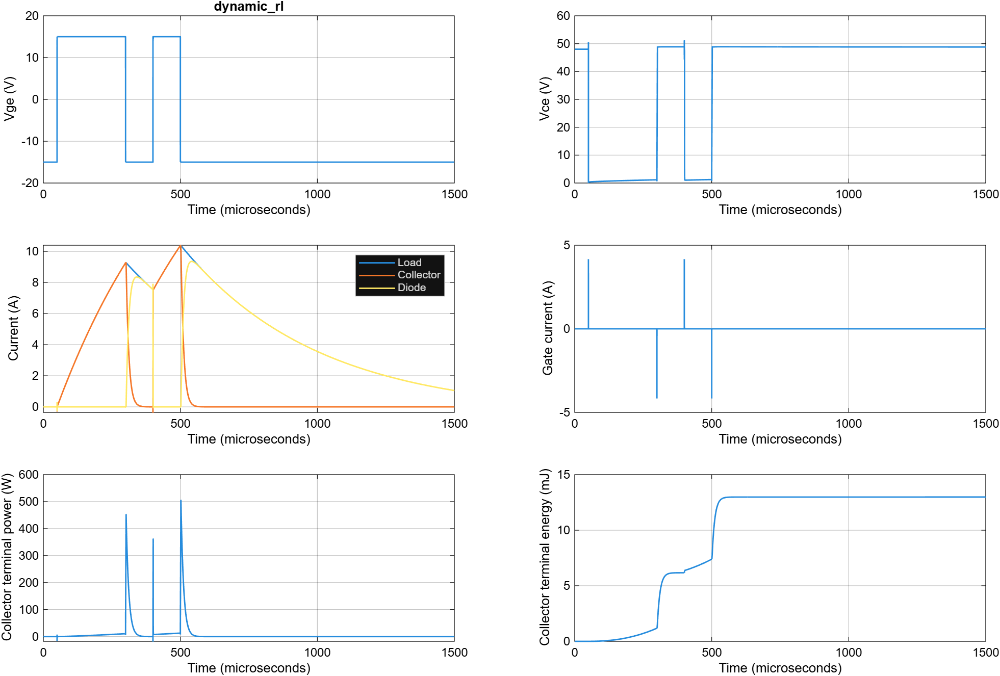
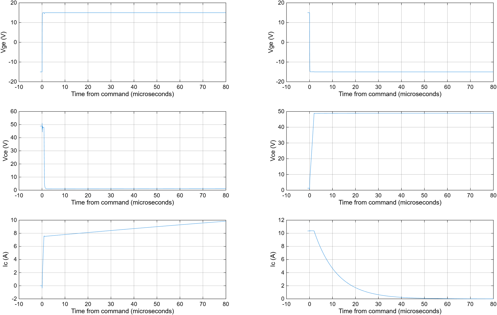

Hardware health decision: INCONCLUSIVE. No module identity, measured calibration data, safe operating area or approved acceptance limits supplied.
Numerical validation checks circuit equations, parameter recovery and/or step convergence. It does not certify a physical module. Models use explicit illustrative device and fixture parameters.
{
"dynamic_rl": {
"scope": "Assumed device numerical validation; no hardware acceptance",
"hardware_decision": "INCONCLUSIVE",
"kcl_max_A": 0,
"bus_kcl_max_A": 0,
"bus_energy_J": 0.1145859907145345,
"load_resistor_energy_J": 0.096689495051011709,
"stray_resistor_energy_J": 0.00017555659517214551,
"dut_collector_terminal_energy_J": 0.012982740793594915,
"dut_gate_terminal_energy_J": 1.415918736053264E-6,
"diode_terminal_energy_J": 0.0041853580072063338,
"stray_stored_energy_change_J": 2.8440301908596479E-21,
"load_stored_energy_change_J": 0.00055284200295131888,
"inductor_flux_relative_error": 8.5779244872442018E-8,
"freewheel_min_current_A": 7.5730466742123035,
"freewheel_Ic_to_IL_ratio": 0.00018057516014370202,
"energy_balance_error_J": -1.7354019193893677E-9,
"energy_balance_relative_error": 1.5144974604380176E-8,
"on_gate_max_error_V": 7.0640223217566245E-6,
"off_gate_max_error_V": 3.2433276864196614E-7,
"peak_Vce_V": 51.142735135450785,
"peak_Ic_A": 10.394896769871444,
"peak_Ig_A": 4.1666669303107318,
"events": [
{
"command_time_s": 4.9999999999999996E-5,
"window_s": [
4.7999999999999994E-5,
6.5E-5
],
"on_event": true,
"gross_collector_terminal_energy_J": 2.1746286237388678E-6,
"gate_charge_C": 1.6425780470112998E-7,
"gate_terminal_energy_J": 3.3532706141574215E-7,
"Vce_transition_10_90_s": 5.1278226580199189E-8,
"command_to_Vce_transition_s": 1.2122418574456796E-7,
"Ic_transition_10_90_s": [],
"current_clearance_1percent_s": []
},
{
"command_time_s": 0.0003,
"window_s": [
0.000298,
0.00037999999999999997
],
"on_event": false,
"gross_collector_terminal_energy_J": 0.0050063556302918453,
"gate_charge_C": -1.6431792039602925E-7,
"gate_terminal_energy_J": 3.6056387610970715E-7,
"Vce_transition_10_90_s": 1.6291108683483637E-6,
"command_to_Vce_transition_s": 1.4208892209642467E-7,
"Ic_transition_10_90_s": 2.1979715937207075E-5,
"current_clearance_1percent_s": 4.8362771721668538E-5
},
{
"command_time_s": 0.00039999999999999996,
"window_s": [
0.00039799999999999997,
0.00041499999999999995
],
"on_event": true,
"gross_collector_terminal_energy_J": 0.00031892084267688909,
"gate_charge_C": 1.6434562205882203E-7,
"gate_terminal_energy_J": 3.6554146880297115E-7,
"Vce_transition_10_90_s": 1.854229855059817E-7,
"command_to_Vce_transition_s": 8.9416643613617628E-7,
"Ic_transition_10_90_s": 6.4429237074881606E-7,
"current_clearance_1percent_s": []
},
{
"command_time_s": 0.0005,
"window_s": [
0.000498,
0.00058
],
"on_event": false,
"gross_collector_terminal_energy_J": 0.0056105524814763306,
"gate_charge_C": -1.6429494966267893E-7,
"gate_terminal_energy_J": 3.5871767554749331E-7,
"Vce_transition_10_90_s": 1.6336333081282866E-6,
"command_to_Vce_transition_s": 1.3773679288374592E-7,
"Ic_transition_10_90_s": 2.198038218864174E-5,
"current_clearance_1percent_s": 4.8345134918950346E-5
}
],
"energy_interpretation": "Gross event terminal integrals include conduction and reactive transfer; not calibrated Eon/Eoff dissipation.",
"status": "PASS",
"half_step_event_energy_relative_errors": [
0.0012035277939905493,
0.00019642806351210084,
0.00088922657831068039,
0.00030383762697314663
],
"fine_max_step_s": 1E-7
}
}{
"schema": "testcell.assumed_device.v1",
"provenance": "Illustrative engineering parameters; not a locomotive module datasheet",
"gateOn_V": 15,
"gateOff_V": -15,
"Vth_V": 6,
"VceCalibration_V": 2,
"IcCalibration_A": 20,
"leakageCalibration_A": 1E-5,
"leakageCalibrationVoltage_V": 100,
"Tcal_C": 25,
"Tsecond_C": 125,
"VceSecond_V": 2.4,
"leakageSecond_A": 0.0005,
"Cies_F": 5E-9,
"Cres_F": 3E-10,
"Coes_F": 8E-10,
"transit_s": 2E-7,
"Rc_Ohm": 0.005,
"Re_Ohm": 0.005,
"RgInternal_Ohm": 0.5,
"RgateExternal_Ohm": 4.7,
"RdriverOn_Ohm": 2,
"RdriverOff_Ohm": 2,
"driverDelay_s": 5E-8,
"bus_V": 48,
"loadR_Ohm": 2,
"loadL_H": 0.001,
"strayL_H": 1E-7,
"strayR_Ohm": 0.01,
"diodeVf_V": 0.8,
"diodeRon_Ohm": 0.01,
"diodeGoff_S": 1E-8,
"diodeC_F": 2E-10,
"pulseEdges_s": [
4.9999999999999996E-5,
0.0003,
0.00039999999999999996,
0.0005
],
"dynamicStop_s": 0.0015,
"dynamicMaxStep_s": 2E-7,
"relTol": 1E-6,
"absTol": 1E-9,
"seed": 2026,
"protectionReference_s": 1E-5,
"hardwareDecision": "INCONCLUSIVE"
}
dynamic_rl.png

dynamic_rl_transients.png

Static temperature is imposed, not self-heating. The current diode has conduction and junction capacitance but no reverse-recovery charge. Event collector-terminal energy includes conduction and reactive transfer; it is not calibrated switching dissipation. No thermal coupling, fault detection or protection timing is implied by these electrical results.